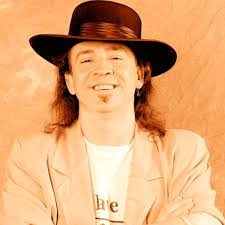

210 Ann and Roy Butler Hike and Bike Trail, Austin, TX 78704
512-827-1990
stevie@vaughn.com
Profile

I am an American musician, singer, songwriter, and record producer. I am also one of the most influential guitarists in the revival of blues in the 1980s. I am also commonly referred to as one of the greatest guitar players of all time.